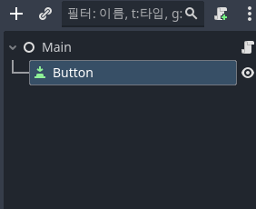
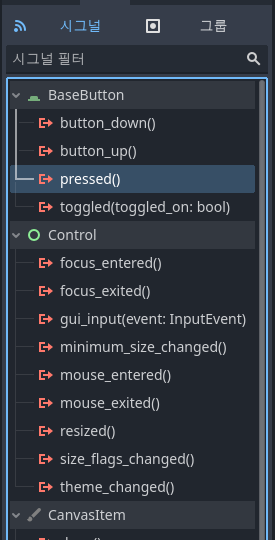
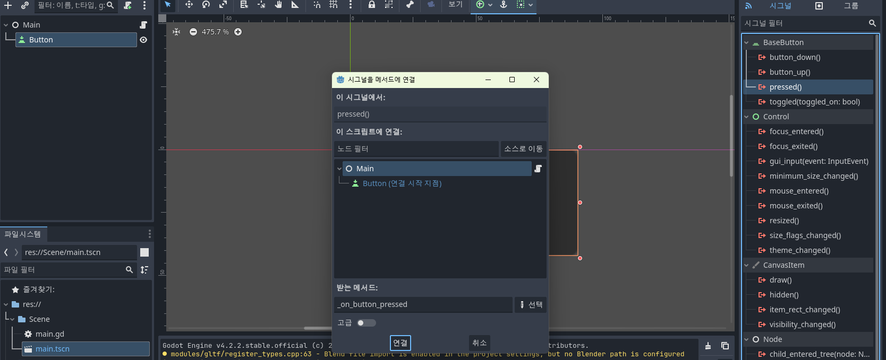
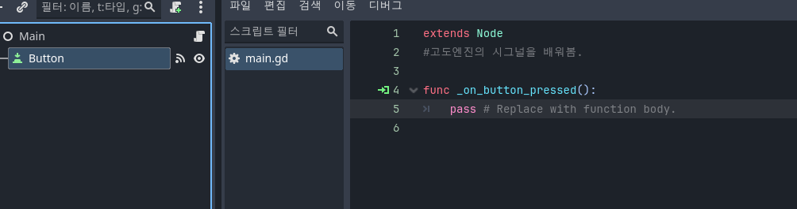
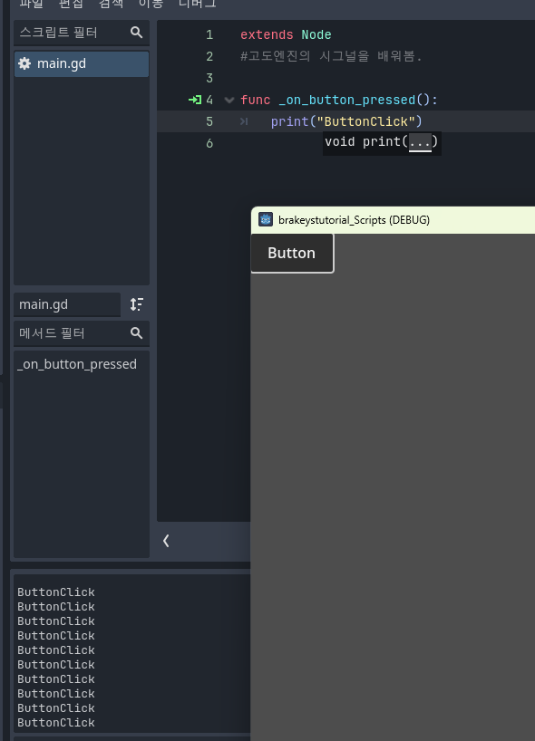

고도 GDScripts 튜토리얼36

고도엔진의 시그널을 배워봄.
노드에 신호를 보내기도하고 받을 수도 있음.

Button노드를 만들고 Button노드를 클릭 그 후 우측 인스펙터창에서 시그널을 클릭.

pressed()함수 더블클릭 후 연결

버튼 누르면 호출되는 함수 func _on_button_pressed():가 보임
스크립트에서 녹색화살표를 누르면 연결된걸 확인할 수 있음.

이제 print()함수를 이용해서 버튼을 눌렀을 때 출력확인을 해봄.
extends Node #고도엔진의 시그널을 배워봄. func _on_button_pressed(): print("ButtonClick")
코드 복사
버튼을 누르세요!